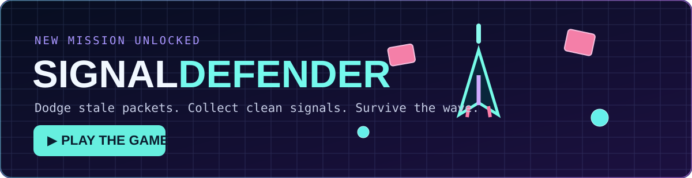

Hi, I'm Laiba.
I build things that work.
Software engineering, native mobile, and applied machine learning. I love getting dropped into unfamiliar systems, understanding the messy parts, and making them better.

Curiosity is the
operating system.
I’m a software engineering intern working on native mobile experiences, and a computer science master’s student exploring machine learning systems.
My favorite projects sit at the intersection of product detail and technical depth: retrieval that knows when it’s wrong, tooling that makes engineers faster, and systems that are easier to reason about.
Portfolio repositories linked below contain AI-assisted educational prototypes and synthetic-data experiments. They are not company code or production case studies.
The project vault.
Open the source. Run the tests. Break things. Learn something.
Chronicle RAG Lab
Version-aware retrieval, grounded answers, provenance, temporal evaluation, and a small HTTP service.
SOURCE CODE ↗ 002 SYSTEMS / AGENTSMeridian ML Reliability
ML reliability reference modules: inference scheduling, safe tools, version checks, and evaluation.
SOURCE CODE ↗ 003 ML SYSTEMSAdvanced ML Systems
Hybrid ranking, off-policy estimators, 4-bit quantization, and deterministic agent trace replay.
SOURCE CODE ↗ 004 EXPERIMENTSApplied ML Experiments
Lightweight document search, recommender baselines, and a reproducible experiment logger.
SOURCE CODE ↗
Yes, I built a game.
A small original browser arcade game. No installs, no login, no tracking. Arrow keys or touch controls.
Talk to the terminal.
Welcome to laibaOS. Type help and press Enter.